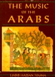
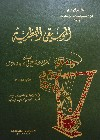
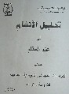
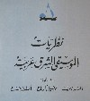

The Music of the Arabs
Author: Habib Hassan Touma
Language: English
Publisher: Amadeus Press, 1996
133 S.W. Second Avenue, Suite 450, Portland, Oregon 97204, U.S.A.
ISBN 0-931340-88-8
See also a review
by Sami Asmar at Turath.org. |

|
|
Arab Music Theory in the Modern Period
Author: Marcus, Scott Lloyd, Ph.D - University of California,
Los Angeles, 1989
Language: English
Publisher: UMI Dissertation Services
A Dissertation submitted in partial satisfaction of the requirements
for the degree Doctor of Philosophy in Music.
Order from: ProQuest Company, 300 North Zeeb Road, P.O.Box 1346,
Ann Arbor, Michigan 48106-1346, U.S.A. 800.521.0600 - 734.761.4700
- www.il.proquest.com. |
|
|
«·„Ê”ÌfiÏ
«·‰Ÿ—Ì…
√·Ì› ”·Ì„ «·Õ·Ê - „œ—¯” fiÊ«⁄œ «·„Ê”ÌfiÏ Ê«·€‰«¡ ›Ì «·„⁄Âœ
«·„Ê”ÌfiÌ «·Êÿ‰Ì fiÌ »Ì—Ê
Ì ÷„¯‰ «’Ê· «·„Ê”ÌfiÏ «·⁄—»Ì… ÊfiÊ«⁄œÂ« «·⁄«„…
«·ÿ»⁄… «·À«‰Ì… (1961) „‰‘Ê—« œ«— „fl »…
«·ÕÌ«… - »Ì—Ê , ·»‰«‰
|

|
Al Mousiqa Al Nadhariyya (La Musique Theorique)
Author: Salim El Helou
Proffessor of music and voice at the Conservatoire National
Superieur de Musique, Beirut, Lebanon
Includes the foundation of Arabic music and its general principles
Publisher: Dar Maktabat Al Hayat - Beirut, Lebanon, 1961 (second
edition) |
|
|
Õ·Ì·
«·«‰€«„ ›Ì ⁄·„ «·„fi«„
·ÿ·«» «·œ—«”« «·⁄·Ì« ›Ì «·„Ê”ÌfiÏ «·⁄—»Ì… - «ÿ—ÊÕ… œfl Ê—«Â
√·Ì›: ⁄»œ «·—Õ„‰ «·Ã»fiÃÌ
«·‰«‘—: œ«— «· —«À «·„Ê”ÌfiÌ - Õ·», ”Ê—Ì« - 1998
|

|
Tahlil Al Angham Fi 3ilm Al Maqam (Melodic Analysis in
Maqam Theory)
Doctoral Dissertation, written for graduate students in Arabic
Msuic
Author: Abdul Rahman Al Jabaqji
Publisher: Dar Al Turath Al Mousiqi - Aleppo, Syria, 1998 |
|
|
‰Ÿ—Ì« «·„Ê”ÌfiÏ «·‘—fi ⁄—»Ì…
√·Ì› Ê·Ìœ €·„̯…, Ê›Ìfi fl—»«Ã, «‰ÿʉ ›—Õ
«·ÿ»⁄… «·«Ê·Ï - 1996
«·‰«‘—: «·„€Âœ «·Êÿ‰Ì «·⁄«·Ì ··„Ê”ÌfiÏ - »Ì—Ê , ·»‰«‰
|

|
Nadhariyyat Al Mousiqa Al Sharq Arabiyya (Theory of Eastern
Arabic Music)
Authors: Walid Ghulmiyeh, Taoufiq Kerbaj, Antoine Farah
Publisher: Le Conservatoire National Superieur de Musique, Beirut,
Lebanon, 1996 (first edition) |
|
|